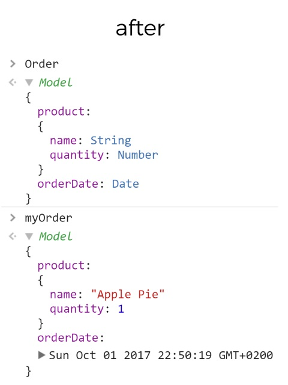
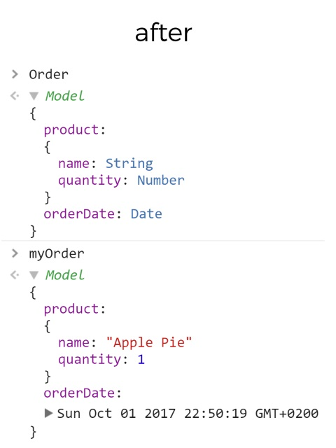

Strong Dynamically Typed Object Modeling for JavaScript
Introduction
What is this library ?
ObjectModel intends to bring strong dynamic type checking to your web applications. Contrary to static type-checking solutions like TypeScript or Flow, ObjectModel can also validate data at runtime: JSON from the server, form inputs, content from local storages, external libraries...
By leveraging ES6 Proxies, this library ensures that your variables always match the model definition and validation constraints you added to them. Thanks to the generated exceptions, it will help you spot potential bugs and save you time spent on debugging. ObjectModel is also very easy to master: no new language to learn, no new tools, no compilation step, just a minimalist and intuitive API in a plain old JS micro-library.
Validating at runtime also brings many other benefits: you can define your own types, use them in complex model definitions with custom assertions that can even change depending on your application state. Actually it goes much further than just type safety. Go on and see for yourself.
What's inside the box ?
Many features, hopefully neither too much nor too few:
- Typed structures: objects, arrays, maps, sets, functions...
- Union types
- Enumerations
- Custom assertions
- Optional properties
- Default values
- Null-safe object traversal
- Easy composition or inheritance
- Constants and private properties based on name conventions
- Explicit error messages
- Customizable error handlers
- all in 3.94 KB minified and gzipped, even less when using tree-shaking
Download
Current version: v4.0.0
-
From
npm:
npm install objectmodel - From CDN: cdn.pika.dev/objectmodel
- Minified bundle (3.94 KB gzipped) : object-model.min.js
- Source files : object-model-4.0.0.zip
Previous versions
If you need to support older browsers, you may have to use an older version of the library instead. Please take a look at the Browsers/Node support section for more information about browser/Node support for each version.
Full changelog between versions is available on the Github Releases page.
Usage
Since v4.0, ObjectModel is shipped in ESM format, and written in modern JavaScript (ES2018).
import { Model } from "objectmodel"Not all environments support ESM yet, so you should configure a transpiler/bundler such as Babel/Webpack for your project. If you just want a ready-to-use UMD version, you can use a transpiling service such as pika.dev or unpkg.com like this:
<script src="https://umd.cdn.pika.dev/objectmodel/v4"></script>const { Model } = objectmodel
Documentation
ObjectModel is already loaded on this webpage, so you can try the examples below in your browser JavaScript console.
Basic models
Basic models simply validate a variable against the model definition passed as argument, and return
the validated value. BasicModel constructor takes a model definition as the only
argument. They are generally used to declare all the basic generic types that you will use in your
application. You can find a list of common basic models here.
import { BasicModel } from "objectmodel"
const NumberModel = BasicModel(Number);
// 'new' keyword is optional for models and model instanceslet x = NumberModel("42");TypeError: expecting Number, got String "42"
Object models
Object models validate nested object properties against a definition tree. They provide automatic validation at initial and future assignments of the properties of the instance objects.
import { ObjectModel } from "objectmodel"
const Order = new ObjectModel({
product: {
name: String,
quantity: Number,
},
orderDate: Date
});const myOrder = new Order({ product: { name: "Apple Pie", quantity: 1 }, orderDate: new Date() }); myOrder.product.quantity = 2; // no exceptions thrown myOrder.product.quantity = false; //try to assign a BooleanTypeError: expecting product.quantity to be Number, got Boolean false
Model constructor
Model is the base class of all models and can be used as an alias for
BasicModel and ObjectModel constructors.
import { Model, BasicModel, ObjectModel } from "objectmodel"
Model(String) // same as BasicModel(String)
Model({ name: String }) // same as ObjectModel({ name: String })Usage with ES6 classes
If you are using ES6 classes in your project, it is very easy to define a model for your classes:
class Character extends Model({ lastName: String, firstName: String }){
get fullName(){ return `${this.firstName} ${this.lastName}`; }
}const rick = new Character({ lastName: "Sanchez", firstName: "Rick" }); rick.lastName = 132;TypeError: expecting lastName to be String, got Number 132console.log(rick.fullName); // "Rick Sanchez"
Optional properties
By default, model properties are mandatory. That means all properties defined are required on instance declaration, otherwise an exception will be raised. But you can specify a property to be optional by using the bracket notation, borrowed from the JSDoc specification
const User = ObjectModel({
email: String, // mandatory
name: [String] // optional
});const stan = User({ email: "stan@smith.com" }); // no exceptions const roger = User({ name: "Roger" }); // email is mandatoryTypeError: expecting email to be String, got undefined
Multiple types
Several valid types can be specified for one property, aka union types.
So optional properties are actually union types between the original type and the values
undefined and null. To declare an optional union type, add
undefined to the list.
const Animation = new ObjectModel({
// can be a Number or a String
delay: [Number, String],
// optional property which can be a Boolean or a String
easing: [Boolean, String, undefined]
});const opening = new Animation({ delay: 300 }); // easing is optional opening.delay = "fast"; // String is a valid type opening.delay = null;TypeError: expecting delay to be Number or String, got nullopening.easing = true; // Boolean is a valid type opening.easing = 1;TypeError: expecting easing to be Boolean or String or undefined, got Number 1
Value checking and enumerations
In model definitions, you can also specify values instead of types for model properties. The property value will have to match the model one. Just like union types, use brackets notation for value enumerations.
If a regular expression is passed, the value must match it.
const Shirt = new ObjectModel({
// the only acceptable value is "clothes"
category: "clothes",
// valid values: 38, 42, "S", "M", "L", "XL", "XXL"...
size: [Number, "M", /^X{0,2}[SL]$/],
// valid values: "black", "#FF0000", undefined...
color: ["black","white", new RegExp("^#([A-F0-9]{6})$"), undefined]
});Null-safe object traversal
When you want to traverse nested objects, you always have to worry about the null pointer exception.
Some languages such as Groovy have a safe navigation operator represented by ?. to
safely navigate through potential null references. In JavaScript, there is no such solution so you
have to manually check for undefined/null values at each level of the object. But
within an object model, declared properties are null-safe for traversal:
every instance complete its structure with undefined properties according to the model definition.
const Config = new ObjectModel({
local: {
time: {
format: ["12h","24h", undefined]
}
}
});
const config = { local: undefined };
const new_config = Config(config); // object modelif(config.local.time.format === "12h"){ hour %= 12; }TypeError: Cannot read property 'time' of undefined// so to prevent this exception, we have to check this way: if(config != null && config.local != null && config.local.time != null && config.local.time.format === "12h"){ hour %= 12; } // with object models, no worries :) if(new_config.local.time.format === "12h"){ hour %= 12; } // new_config.local.time.format returns undefined
Default values assignment
You can set a default value for any model with model.defaultTo(value). This default
value will be used if no argument is passed to the model constructor.
let N = BasicModel(Number).defaultTo(1)N(5) + N() === 6For object models, the defaultTo method can be used to specify default values for some
properties of your object models. If these are not defined at object instanciation, their default
value will be assigned. You can also put them in the model prototype if you prefer to rely on
prototypal
inheritance.
const FileInfo = ObjectModel({
name: String,
size: [Number],
creationDate: [Date],
writable: Boolean
}).defaultTo({
name: "Untitled file",
size: 0,
writable: true
});let file = new FileInfo({ writable: false });file.name; // name is mandatory but a default value was passed"Untitled file"file.size; // size is optional, but the default value still applies0file.creationDate; // no default value was passed for this propertyundefinedfile.writable; // passed value overrides default valuefalseObject.keys(file);["name","size","creationDate","writable"]
Composition with models as types
Nested properties definitions can be models too, so you can compose structures of models.
When a property value matches a model definition, the value is automatically replaced by an instance of the corresponding model. This mechanic is referred as autocasting and can be compared to duck typing . Autocasting works for object models properties, but also for Array/Map/Set models items when inserted, and for FunctionModel arguments and return value.
This naive approach is very time saving and allows you, for example, to parse composed models from JSON in one step. If there is somehow an ambiguity (such as two suitable models within an union type), the value is kept unchanged and a warning console message will inform you how to solve this ambiguity.
const Person = ObjectModel({
name: String,
age: [Number]
});
const Lovers = ObjectModel({
husband: Person,
wife: Person
});const joe = { name: "Joe", age: 42 };
const ann = new Person({
name: joe.name + "'s wife",
age: joe.age - 5
});
const couple = Lovers({
husband: joe, // object autocasted
wife: ann // object model
});
couple.husband instanceof Person === true // has been casted to PersonInheritance by extension
Extensions create new models based on existing model definitions. You can declare new properties or override previous ones. Therefore, it is an easy way to reproduce subtyping and class inheritance patterns.
const Person = ObjectModel({
name: String,
female: Boolean
});
const Mother = Person.extend({
female: true,
child: Person
});let joe = new Person({ name: "Joe", female: false }); let ann = new Person({ name: "Ann", female: true }); let joanna = new Person({ name: "Joanna", female: true }); ann = new Mother({ name: "Ann", female: true, child: joanna }) ann instanceof Mother && ann instanceof Person // truejoe = Mother(joe); // try to cast joe to Mother modelTypeError: expecting female to be true, got Boolean false expecting child to be { name: String, female: Boolean }, got undefined
With ES6 classes
Extended models inherit the parent's prototype chain, so you can easily combine it with class inheritance. Just make sure to respect the Liskov substitution principle when you extend a type definition.
class Person extends ObjectModel({ name: String, female: Boolean }){
constructor({ name, female }){
if(!female) name = `Mr ${name}`
super({ name, female })
}
}
class Mother extends Person.extend({ female: true, child: Person }){
constructor({ name, female, child }){
super({ name: `Mrs ${name}`, female, child })
}
}let joe = new Person({ name: "Joe", female: false }) let joanna = new Person({ name: "Joanna", female: true }) let ann = new Mother({ name: "Ann", female: true, child: joanna })joe.nameMr Joeann.nameMrs Annann.child.nameJoanna
Multiple inheritance
But it goes further: you can do multiple inheritance and mix any number of parent models definitions and assertions. If some properties have the same name, those of the last object overrides the others.
const Client = Person.extend(User, Order, { store: String }); Client.prototype.sendConfirmationMail = function(){ return this.email + ": Dear " + this.name + ", thank you for ordering " + this.product.quantity + " " + this.product.name + " on " + this.store; }; Object.keys(Client.definition);["name", "female", "email", "product", "orderDate", "store"]
const joe = new Client({ name: "Joe", female: false, email: "joe@email.net", product: { name: "diapers", quantity: 100 }, orderDate: new Date(), store: "daddy.net" }); joe.sendConfirmationMail();joe@email.net: Dear Joe, thank you for ordering 100 diapers on daddy.net
Assertions for custom validation tests
You can add to your models any number of assertions that are custom test functions applied on model
instances. All assertions are called every time the model is changed, and must all return
true to validate. Exceptions thrown in assertions are catched and considered as
assertion failures.
For example, we can get an Integer model by adding Number.isInteger as an assertion to a
basic Number model.
Assertions are inherited from the model prototype, so you can add global assertions on all models by
setting them in Model.prototype. The second argument of the assert method
is an optional message shown when assertion fails. It can be a String or a function returning a
String.
const PositiveInteger = BasicModel(Number)
.assert(Number.isInteger)
.assert(n => n >= 0, "should be greater or equal to zero")
function isPrime(n) {
for (let i=2, m=Math.sqrt(n); i <= m ; i++){
if(n%i === 0) return false;
}
return n > 1;
}
const PrimeNumber = PositiveInteger.extend().assert(isPrime);
// extend to not add isPrime assertion to the Integer model
PositiveInteger(-1);TypeError: assertion should be greater or equal to zero returned false for value -1PositiveInteger(Math.sqrt(2));TypeError: assertion isInteger returned false for value 1.414213562373PrimeNumber(83);83PrimeNumber(87);TypeError: assertion isPrime returned false for value 87
Private and constant properties
Some variable naming conventions are commonly used in JavaScript. For example, a leading underscore is used to specify a _private property which should not be used outside the object own methods. Also, constants are often in ALL_CAPS. Model definitions follow these conventions by making _underscored properties not enumerable and not usable outside of the instance's own methods, and CAPITALIZED properties not writable.
Note: private properties access is granted only when using the instance own methods. Methods declared in an extended class cannot access to privates. Asynchronous callbacks do not work neither, except if these callbacks are defined as methods of the model. If this does not fit your usecase, you should probably not make these properties private.
const Circle = ObjectModel({
radius: Number, // public
_index: Number, // private
UNIT: ["px","cm"], // constant
_ID: [Number], // private and constant
}).defaultTo({
_index: 0,
getIndex(){ return this._index },
setIndex(value){ this._index = value }
});
let c = new Circle({ radius: 120, UNIT: "px", _ID: 1 }); c.radius = 100; c.UNIT = "cm";TypeError: cannot modify constant property UNITc._index = 1;TypeError: cannot modify private property _indexconsole.log( c._index )TypeError: cannot access to private property _indexc.setIndex(2); console.log( c.getIndex() )2Object.keys(c); // private variables are not enumerated["radius", "UNIT"]
You can modify or remove these conventions by overriding the
conventionForPrivate and
conventionForConstant methods in your model or globally in
Model.prototype.
// change the private convention for all models
Model.prototype.conventionForPrivate = key => key.startsWith('#');
// remove the constant convention specifically for Circle
Circle.conventionForConstant = () => false;// Private and constant conventions have been changed c._index = 3; c.UNIT = "cm"; console.log(c._index, c.UNIT); // no more errors3 "cm"
Array models
Array models validate the type of all elements in an array.
The validation is done on initial array elements passed to the model, then on new elements added or modified afterwards.
import { ArrayModel } from "objectmodel";
const Cards = new ArrayModel([Number, "J","Q","K"]);
// Hand is an array of 2 Numbers, J, Q, or K
const Hand = Cards.extend()
.assert(a => a.length === 2, "should have two cards");const myHand = Hand( [7, "K"] ); myHand[0] = "Joker"TypeError: expecting Array[0] to be Number or "J" or "Q" or "K", got String "Joker"myHand.push("K");TypeError: assertion "should have two cards" returned false for value [7, "Joker", "K"]
All the validation options for previous models are also available for array model elements: type/value checking, optional properties, union types, enumerations, assertions...
const Family = ObjectModel({
father: Father,
mother: Mother,
children: ArrayModel(Person), // array of Persons
grandparents: [ArrayModel([Mother, Father])]
// optional array of Mothers or Fathers
});const joefamily = new Family({ father: joe, mother: ann, children: [joanna, "dog"] });TypeError: expecting Array[1] to be { name: String, female: Boolean }, got String "dog"
Function models
Function models provide validation on input (arguments) and output (return value). All the validation
options for Object models are also available for Function models. The arguments passed to
FunctionModel are the types of the arguments the function will receive, and the
return method is used to specify the type of the function return value.
import { FunctionModel, BasicModel } from "objectmodel";
const Numb = BasicModel(Number).assert(Number.isFinite);
const Operator = BasicModel(["+","-","*","/"])
const Calculator = FunctionModel(Numb, Operator, Numb).return(Numb);
const calc = new Calculator((a, operator, b) => eval(a + operator + b));
calc(3, "+", 1);4calc(6, "*", null);TypeError: expecting arguments[2] to be Number, got nullcalc(1, "/", 0);TypeError: assertion "isFinite" returned false for value Infinity
In classical JavaScript OOP programming, methods are declared in the constructor's
prototype. You can do the same with instances of function models.
Another option is to provide a default implementation in the model definition by using the
defaultTo method. See the Default values section.
The difference is that all the properties in the model definition are required for an object
to be considered suitable for the model. In the following example, an object must have a function
sayMyName to be valid as a Person, while the function greet is not
mandatory.
const Person = ObjectModel({
name: String,
// function without arguments returning a String
sayMyName: FunctionModel().return(String)
}).defaultTo({
sayMyName: function(){ return "my name is " + this.name }
})
// takes one Person as argument, returns a String
Person.prototype.greet = FunctionModel(Person).return(String)(
function(otherguy){
return "Hello "+ otherguy.name + ", " + this.sayMyName()
}
)const joe = new Person({ name: "Joe" }); joe.sayMyName();my name is Joejoe.greet({ name: "Ann", greet: "hi ?" });Hello Ann, my name is Joejoe.greet({ name: "dog", sayMyName: "woof !" });TypeError: expecting arguments[0].sayMyName to be "Function", got String "woof !"
Map models
Map models validate ES6 Map objects by checking both keys and values. The arguments
passed to MapModel are respectively the definition for the keys and the definition for
the values.
import { MapModel, Model } from "objectmodel";
const Course = Model([ "math", "english", "history" ])
const Grade = Model([ "A", "B", "C" ])
const Gradebook = MapModel(Course, Grade)
const joannaGrades = new Gradebook([ ["math", "B"], ["english", "C"] ]) joannaGrades.set("videogames", "A")TypeError: expecting Map key to be "math" or "english" or "history", got String "videogames"joannaGrades.set("history", "nope")TypeError: expecting Map["history"] to be "A" or "B" or "C" , got String "nope"
Set models
Set models validate ES6 Set objects by checking the type of all the elements in the set.
The API is the same as array models.
import { SetModel } from "objectmodel";
const Course = Model([ "math", "english", "history" ])
const FavoriteCourses = SetModel(Course)
const joannaFavorites = FavoriteCourses([ "math", "english" ]) joannaGrades.add("sleeping")TypeError: expecting Set value to be "math" or "english" or "history", got String "sleeping"
Any model
The Any model is used to define a property or parameter that can take any value.
It is better than an union type with all primitives and objects, as it skips every validation step
instead of checking every possible type.
import { Any, ObjectModel, ArrayModel, FunctionModel } from "objectmodel";
// examples using the Any Model
const DataWrapper = ObjectModel({ data: Any })
const ArrayNotEmpty = ArrayModel(Any).assert(arr => return arr.length > 0)
const Serializer = FunctionModel(Any).return(String);...Any remaining parameter
The Any model can also be used as ...Any in FunctionModel
parameters definition to specify a function that can take any amount of parameters.
...Any is a straight-forward syntax for functions already using the ES6
rest operator, but you can use Any.remaining as an alias to
...Any if you prefer.
The remaining parameters can be checked against a definition passed as argument
(...Any(def) or Any.remaining(def)). That definition defaults to
Any if not specified.
import { Any, FunctionModel } from "objectmodel";
// takes 2 parameters or more
const Operation = FunctionModel(Number, Number, ...Any)
// takes any amount of Numbers as parameters
const NumericOperation = FunctionModel(...Any(Number)).return(Number)Custom error collectors
By default, validation errors are collected every time a model instance is created or modified, and
thrown as TypeError exceptions with a message describing all the errors found. It it
possible to change this behaviour and add your own error collectors. For example, you may want to
notify the user that an error occurred, or send the information to your server for error tracking on
production.
Error collectors are callback functions called with an array of all the errors collected during the last model inspection. Every error is an object with these properties:
message: a message describing the errorexpected: the expected type definition or assertion/li>received: the received value, to compare to the expectedpath: the path where the error occurred in an object model definition
Global error collector
This is how you define an error collector globally for all models.
Model.prototype.errorCollector = function(errors){
console.log("Global error collector caught these errors:");
errors.forEach(error => { console.dir(error) });
};
const Student = ObjectModel({
name: String,
course: [ "math","english","history" ],
grade: Number
}).assert(student => student.grade >= 60,
"should at least get 60 to validate semester")
new Student({ name: "Joanna", course: "sleep", grade: 0 });Global error collector caught these errors:
{
message: 'expecting course to be "math" or "english" or "history", got String "sleep"'
path: "course"
expected: ["math","english","history"]
received: "sleep"
}
{
message: "assertion should at least get 60 to validate semester returned false for value { name: "Joanna", course: "sleep", grade: 0 }",
path: null,
expected: student => student.grade >= 60,
received: { name: "Joanna", course: "sleep", grade: 0 }
}Model error collector
This is how you define an error collector specifically by model
Student.errorCollector = function(errors){
console.log("Student model error collector caught these errors:");
errors.forEach(error => { console.dir(error) });
};
new Student({ name: "Joanna", course: "math", grade: 50 });Student model collector caught these errors:
{
message: "assertion should at least get 60 to validate semester returned false for value { name: "Joanna", course: "math", grade: 50 }",
path: null,
expected: student => student.grade >= 60,
received: { name: "Joanna", course: "math", grade: 50 }
}Single-use error collector
And this is how you define an error collector to be used only once with
test(obj, myErrorCollector)
Student.test({
name: "Joanna",
course: "cheating",
grade: 90
}, function(errors){
console.log("This specific error collector caught these errors:");
errors.forEach(error => { console.dir(error) });
});This specific error collector caught these errors:
{
message: 'expecting course to be "math" or "english" or "history", got String "cheating"'
path: "course"
expected: ["math","english","history","science"]
received: "cheating"
}Custom devtool formatters
ObjectModel provides custom formatters for Models and Model instances in Chrome Developer Tools, available in Chrome and Opera. These formatters improve the way models and instances are displayed when logged in the console.
Enabling custom formatters
Chrome currently doesn’t have custom formatters enabled by default. You need to enter the DevTools settings via the menu at the top right of the DevTools panel, then select Preferences and check Enable custom formatters in the Console section.
 

The formatters for ObjectModel are included by default in the unminified bundle
(dist/object-model.js).
If you are using modules, import them manually with :
import * from "objectmodel/src/devtool-formatter"Specifying the Model Name (since v3.4)
A variable name is irrelevant to name a Model, because several variables with different names can point
to the same Model reference. To specify a unique model name for debugging purposes, you can use the
as() method like this :
const Integer = Model(Number).assert(Number.isInteger).as("Integer");
console.log(Integer.name) // "Integer"Full API
Imported from objectmodel root scope
- Model
Model(definition) - Constructor alias for basic and object models
- BasicModel
BasicModel(definition) - Constructor for basic models
- ObjectModel
ObjectModel(definition) - Constructor for object models
- ArrayModel
ArrayModel(itemDefinition) - Constructor for array models
- FunctionModel
FunctionModel(definitionArgument1, definitionArgument2, ...) - Constructor for function models
- MapModel
MapModel(keyDefinition, valueDefinition) - Constructor for map models
- SetModel
SetModel(itemDefinition) - Constructor for set models
Model methods and properties
- name
model.name - The name of the model, used for debugging purposes
- as
model.as(newName) - Set the name of the model
- definition
model.definition - Returns the model definition
- extend
model.extend(...otherModelsOrDefinitions) - Returns a new model based on the initial model merged with other definitions/assertions
- assertions
model.assertions - Returns the list of model assertions
- assert
model.assert(assertion, [description]) - Add a test function to the model that must return
trueto validate the instance. - default
model.default - Returns the default value if defined
- defaultTo
model.defaultTo(defaultValue) - Set the default value of the model
- errorCollector
model.errorCollector = function(errors){ ... } - Function called when validation errors are detected
- test
model.test(value, [errorCollector]) - Returns
trueif the value passed validates the model definition. Works with autocasting. A custom error collector can be specified to retrieve the validation errors. - conventionForConstant
function(variableName) - Internal function used to identify a constant property based on naming convention. You can override it to suit your needs.
- conventionForPrivate
function(variableName) - Internal function used to identify a non-enumerable property based on naming convention. You can override it to suit your needs.
Object models
- defaultTo
objectModel.defaultTo(defaultValuesObject) - Set the default values for some model properties.
Function models
- return
functionModel.return(returnValueDefinition) - Set the definition of the return value. Each call to the function must return a validated value, otherwise an exception will be raised.
Commonly used models
Here are some models that you may find useful. These are not included in the library, so pick what you need or get them all from here
Common questions
Which browsers and node versions are supported ?
This library is unit tested against these browsers and Node.js versions, depending of the version of Object Model:
- v1.x
- Chrome 29+, Firefox 24+, Edge, Internet Explorer 9+, Opera 20+, Safari 5.1+, Node.js 4.0+
- v2.x
- Support for IE < 11 had to be dropped in v2 because it required many hacks and was holding back other browsers. Otherwise, same support than v1.
- v3.x
- ObjectModel v3 is built around ES6 Proxies, so requires modern environments : Edge 14+, Firefox 47+, Chrome 50+, Safari 10+, Node 6.0+.
- v4.x
- Support for Node 6-7 has been dropped in v4. Use a transpiler like Babel to target the same environments than v3.
More information about these changes between major versions on the Github Releases page
What is the impact on performance ?
To get dynamic type validation, Object models have to use Proxies to catch properties assignments. This has a performance cost, especially on older browsers. Therefore, it is not advisable to use object models in performance-critical parts of your applications. In particular, Array models and circular references in models have the most impact on performance. But in general, the loss of time does not exceed a few milliseconds and is quite negligible.
How can I get the model from an instance ?
With the constructor property. If this property is used in your model, you can
also retrieve it with Object.getPrototypeOf(instance).constructor. This is
useful for retrieving the type of a property for example.
const User = ObjectModel({ name: String }),
joe = User({ name: "Joe" });
const modelOfJoe = joe.constructor // or Object.getPrototypeOf(joe).constructor;
// modelOfJoe === User
// modelOfJoe.definition.name === StringHow do I declare a constructor function to be called on instanciation before validating my model ?
The recommended way is to use a factory function to instanciate your models. You can declare as many different factories as needed, which makes this pattern both simple and flexible.
const User = ObjectModel({
firstName: String,
lastName: String,
fullName: String
});
User.create = function(properties){
properties.fullName = properties.firstName + " " + properties.lastName;
return new User(properties);
};
const joe = User.create({ firstName: "Joe", lastName: "Dalton" });How do I prevent adding undeclared properties to my object models ?
This feature, previously known as sealed models, has been removed from the library since v4.x. It is now available as a custom model available here.
How should I deal with circular references in my model definitions ?
You can't refer to a model or instance that is not yet defined, so you have to update the definition afterwards:
const Honey = ObjectModel({
sweetie: undefined // Sweetie is not yet defined
});
const Sweetie = ObjectModel({
honey: Honey
});
Honey.definition.sweetie = [Sweetie];
const joe = Honey({ sweetie: undefined }); // ann is not yet defined
const ann = Sweetie({ honey: joe });
joe.sweetie = ann;How can I serialize/deserialize objects while preserving type information ?
Serializing in JSON necessarily implies that you lose the type information, except if you store it manually with your data, then retrieve it with a custom parsing function. It is for the best to let you decide how you want to store the type information within your data.
Here is a proposal of implementation using a simple { _value, _type } wrapper:
Model.prototype.serialize = function(instance, models){
const names = Object.keys(models);
return JSON.stringify(instance, function(key, value){
const modelName = names.find(name => value instanceof models[name]);
if(modelName && key !== "_value"){
return { _type: modelName, _value: value }
}
return value;
}, '\t');
}
Model.prototype.parse = function(json, models){
return JSON.parse(json, function(key, o){
if(o && o._type in models){
return new models[o._type](o._value);
}
return o;
})
}const Type1 = ObjectModel({ content: String }).defaultTo({ content: 'Content 1' }),
Type2 = ObjectModel({ content: String }).defaultTo({ content: 'Content 2' }),
Container = ObjectModel({ items: ArrayModel([Type1, Type2]) });
// List all your serializable models here
const serializableModels = { Container, Type1, Type2 };
let a = new Container({ items: [new Type1, new Type2] });
let json = Container.serialize(a, serializableModels);
console.log(json);
let b = Container.parse(json, serializableModels);
console.log(
b instanceof Container,
b.items[0] instanceof Type1,
b.items[1] instanceof Type2
);Is it possible to convert TypeScript/Flow annotations to Models ?
It may be possible with Babel, but ObjectModel is not the best option for this purpose.
Models have been designed to use all the advantages of runtime validation, such as complex assertions, mixed value/type checking or custom error collectors. Compared to static type systems, the feature set is really different. I suggest you to combine the strengths of static and dynamic type-checking: use static annotations in your business logic layer, and Models at your API boundaries to validate user input, network responses or serialized data. You can also use both at the same place as demonstrated in the introduction video.
If you are looking for a runtime type-checking solution that acts as a fully transparent layer over an existing static type system, you should try flow-runtime instead.
How do I validate values returned by Promises or other async structures ?
It is impossible to validate both the Promise and the resolved value at the same time, because of its asynchronous nature. So it actually requires two different models: a first one to check if it is actually a Promise, then a second one to validate the emitted value once the promise is resolved. See this issue for details.
const PromiseOf = definition => {
const PromiseModel = BasicModel(Promise);
const ResolvedValueModel = Model(definition)
return p => PromiseModel(p).then(x => ResolvedValueModel(x))
}let p = new Promise(resolve => setTimeout(() => resolve(42), 1000));
PromiseOf(Number)(p).then(n => {
// ObjectModel has validated both the Promise and the resolved value
})I have a question / suggestion / bug to report
Please check the documentation twice, then open an issue on the Github repository
You can also ask for support on the Gitter channel .